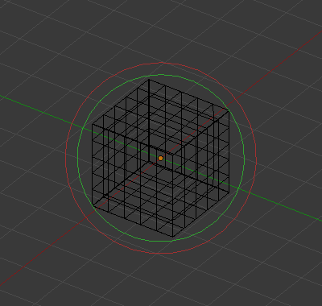

属性¶
参考
- 模式
物体模式和编辑模式
- 面板
场景中所有在相同的 族 中的 融球 物体能够相互作用。 融球 部分中的设置适用于活动族的所有融球物体。在编辑模式下， 活动元素 面板将显示 编辑中 的各个融球元素。

全局融球属性。¶ |

单个融球属性。¶ |
分辨率¶
分辨率 控制由融球生成的网格的分辨率.
- 视图
3D视图中生成网格的分辨率;由最精细的到最粗糙的。
- 渲染
生成网格的渲染分辨率;;由最精细的到最粗糙的。
查看底层数学结构的一种方法是降低 分辨率 ，增加 阈值 ，并将 刚度 设置在 阈值 之上(见下文)。图 底层结构。 是一个立方体融球，其应用的上述配置如下: 分辨率 为0.410， 阈值 为5.0， 刚度 略高于5.01。

底层结构。¶ |

立方体融球形状。¶ |
您可以清楚地看到底层的立方结构，它给出了立方体融球的形状。
影响阈值¶
影响阈值 定义了融球的表面如何 "影响" 其他的元物融球。它控制计算其表面时的 场级别 。这个设置是对于一组 融球 全局有效的。随着阈值增加,每一个融球对其他融球的影响程度也随之增加。
有两种 影响 类型: 正向 或 负向 。
更新¶
当变换融球(抓取/移动,缩放等)时，你有四个可视化 "模式" ，他们都在 融球 面板的 更新 按钮组里：
- 总是
在转换期间完全显示融球。
- 一半
在转换期间，以其 视图 分辨率的一半显示融球。
- 快速
在转换期间不要显示融球。
- 从不
永远不要显示融球网格(这不是一个推荐的选项，因为这样会使得融球网格只在渲染时可见！)。
如果遇到困难，这应该会所帮助(当融球的计算非常密集……)，但是对于现代计算机，这应该不会发生，除非使用许多融球或非常高的分辨率……